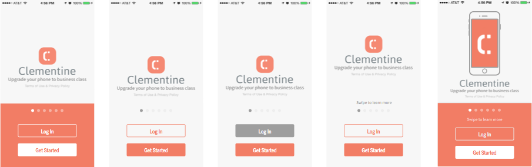
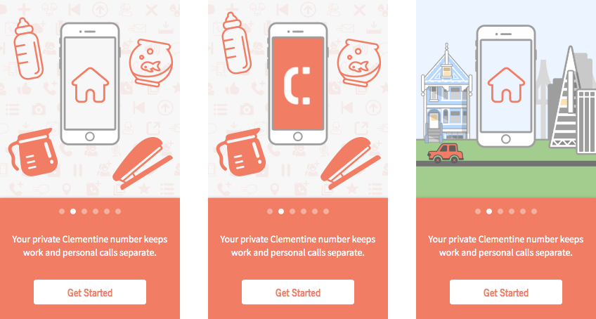
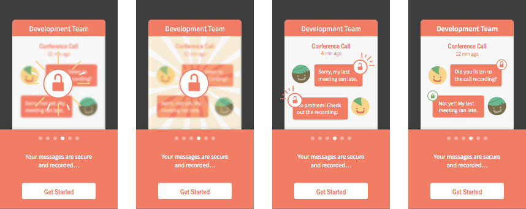

Clementine Onboarding

Goal
In redesigning the onboarding flow, my main goal was to craft the story of the Clementine experience. At the same time, onboarding should introduce new customers to four main features:
- A private Clementine number for business
- Effortless conference calls
- Secure voice and text communication
- Call recording and message archiving
Our previous onboarding flow wasn’t dynamic nor swipeable and consisted mainly of UI screenshots. Most importantly, it didn’t tell a story.
“Competitor” Analysis
I pinpointed a few apps with onboarding flows that were great examples of the same high-level goals I wanted to achieve: complex interactions/ideas explained in a personable, interactive way.
-
Carousel
-
Inbox
-
 Instacart
Instacart -
 Periscope
Periscope -
 Pocket
Pocket -
Slack
I’m also indebted to Sam Hulick’s Onboarding Teardowns.
Concepts & Sketching
I start every project with some quick sketches to get feedback from the team about the direction I’m taking without letting visuals interfere with critique. However, sketches for this project progressed to a more detailed state than usual since our onboarding is heavily visual. I wanted to outline illustrations/interactions before I moved to Sketch and Framer since redoing them would be incredibly time-consuming.
While sketching, I kept in mind that:
- While Clementine is an enterprise product, it’s still a consumer-facing product. The language and tone should reflect that.
- Clementine has a wide range of customers (some who are focused on the messaging aspect, others focused on secure communications, etc.), so each of the highlighted features needs to shine, as well as fit into the overarching product story.
- Customers vary in terms of how they go through onboarding. Some want to sign up right away. Some need to be wined and dined. Some don’t care about your animations. The pacing of onboarding should be flexible, and actionable targets should exist throughout the flow.
Mockups

Storyboarding in Sketch quickly made it clear that:
- My idea to convey how Clementine separates your work and personal life was too subtle. The illustrations for work life and home life didn’t provide enough contrast to emphasize this feature effectively.

- My idea to feature secure messaging, however, was too over-the-top. The animations and illustrations I had planned would either obscure text or too strictly control pacing for users through the onboarding flow.

The ultimate story I settled on started from a high-level use case (customers who needed to separate their work and personal communications) that pinpointed more specific features as customers swiped through the onboarding screens. Each screen introduces a single Clementine feature and uses bold but restrained animations to keep the customer’s attention focused on a single point on the screen, rather than struggling to keep up.
Prototyping
After tweaking my designs, I hopped into Framer (for the first time ever to seriously work on a project). The design team at Clementine traditionally uses Pixate and Flinto for interaction prototyping, but I felt the animations for onboarding were complex enough to warrant finally getting my hands dirty with Framer.
See it live!
Note: Best viewed on desktop or with the Frameless browser on mobile.
Next Steps & Lessons Learned
Clementine’s onboarding is still in the building stage. We haven’t had the time to put it into the hands of actual new users, but here are some lessons from the early stages:
- Fail early and fast. Constant feedback during the early stages is crucial. I could’ve saved even more time with illustration by pulling people in to get more feedback than I was already trying to.
- I was able to really improve my interaction design and storytelling skills during this project. The more complex the story, the more important it is to keep it simple and friendly.
- Framer still needs work when it comes to timing animations. Relying on event listeners got increasingly messy with the number of moving parts. I still had to rely on Pixate for some parts of prototyping. I might try my hand with Form next.
In improving our onboarding, there’s still more thinking to be done around nudging customers to pay subscription fees for the service. This payment prompt currently appears after signup, but a more seamless flow between new user onboarding and payment is important for conversion.